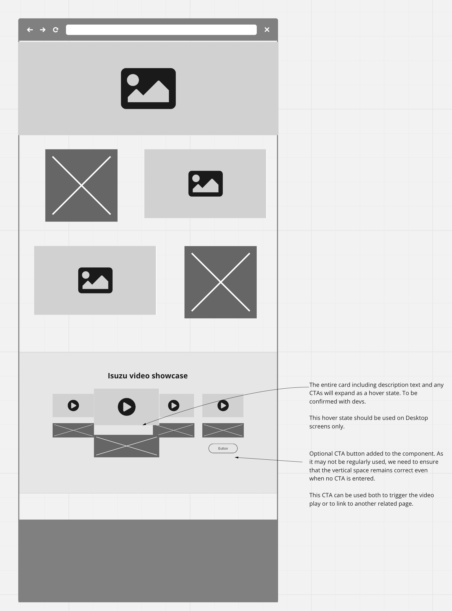
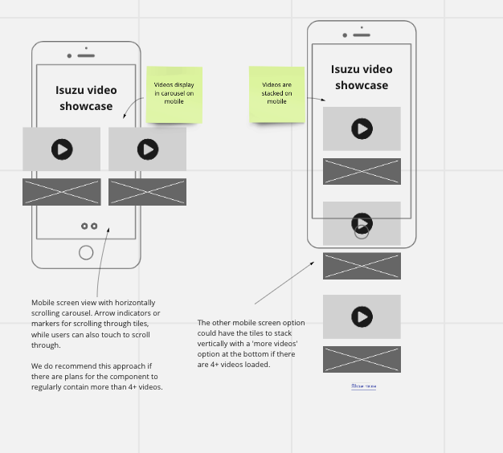
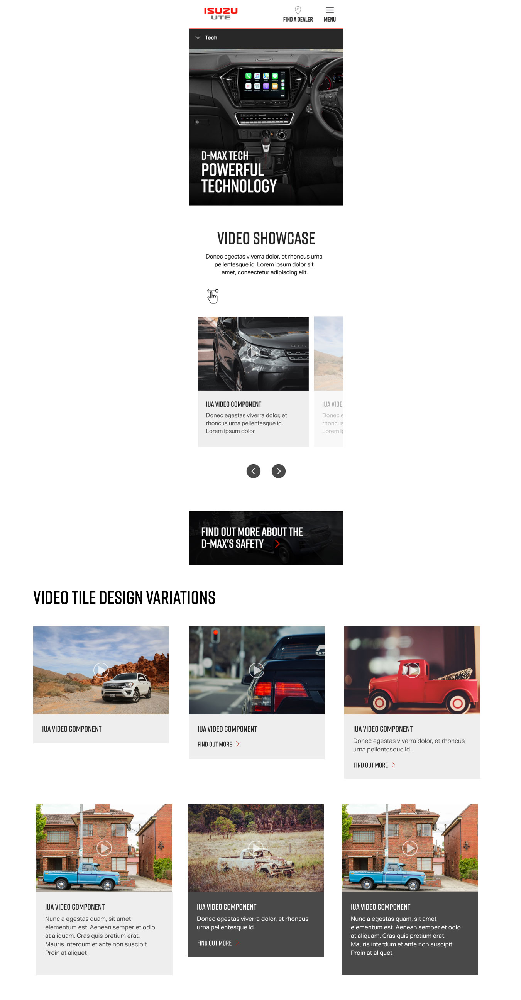
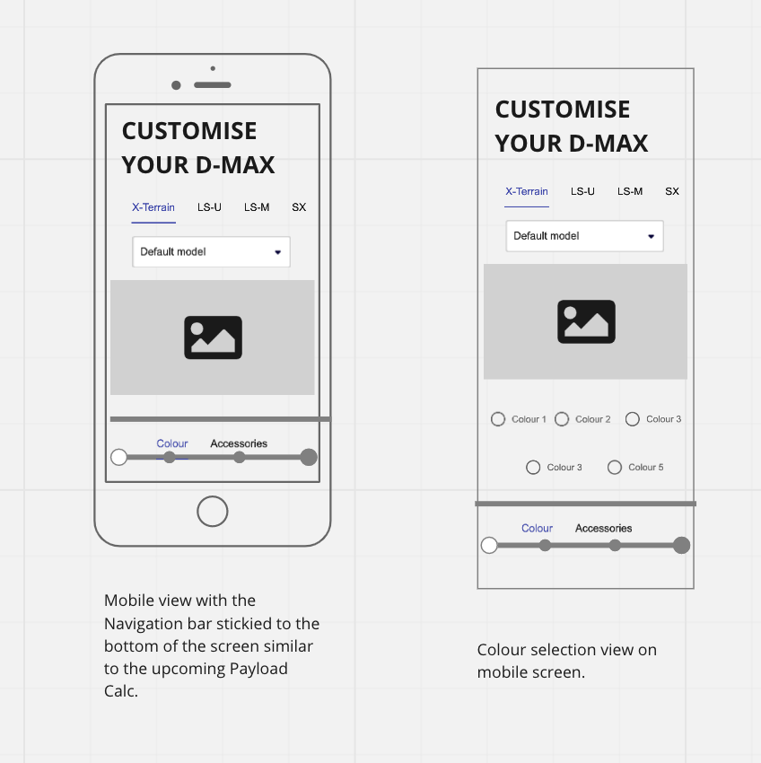
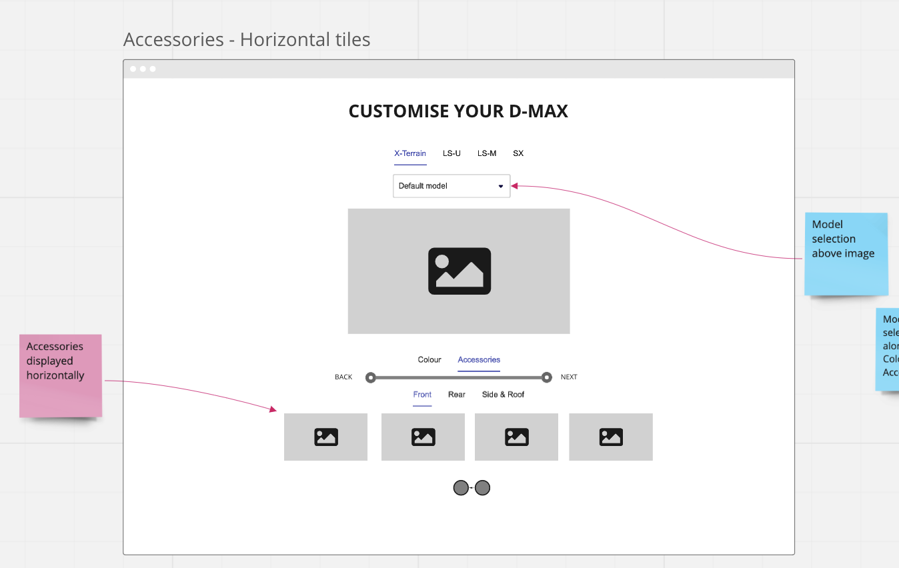
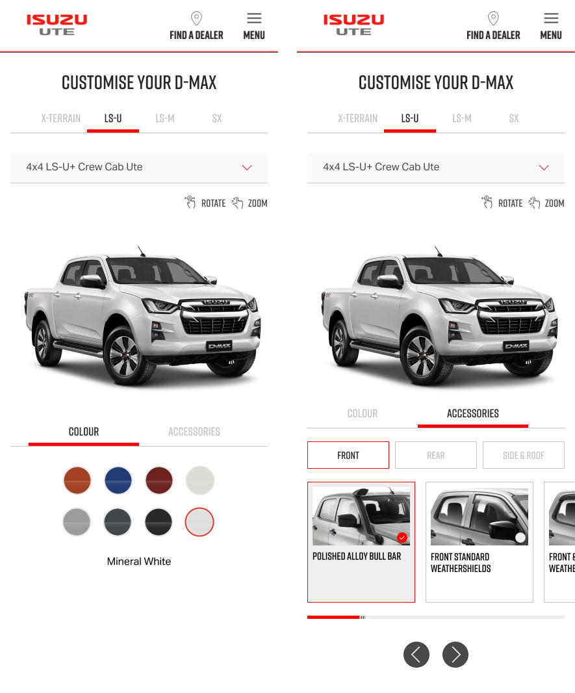
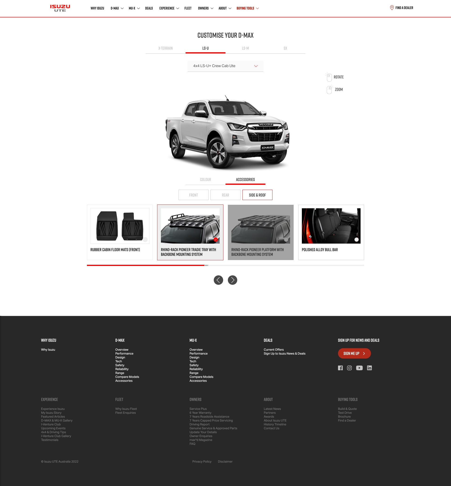

Video showcase component
Videos had become an important part of the user consideration journey and is content that is highly sought after. IUA needed to be able to add more videos to pages using a component that can house multiple videos for the user to engage with, without taking up too much space on the page. My role was esseintially to help increase videos engagement and viewership.
As part of scope I researched, planned usage of and designed new componentry to help their digital assets catch up to their presence in the overall market. Surveys suggest that more than 95% of consumers find that video aids their purchasing decisions and more than 70% say they’re more likely to purchase products advertised using video.
Carousels are generally a good practice from the UX (user experience) point of view as long as you use them in the right places, for the right purpose, and in the right way.


Some of the UX considerations that I needed to take into account when designing were
- Ensure the carousel is touch-friendly on mobile devices
- Not use video showcase component for essential information as they can often be skipped by users. They should primarily be used for content enrichment and visit engagement
- Not to autoplay videos. Users who don’t want to watch the video must devote extra effort to figure out how to turn the audio off or pause the video, rather than focusing on their goals. This usually annoys users
- Consider what the user should do at the end of a video. Is there the ability to prompt them to the next video? At the least, ensure any related videos are Isuzu owned videos and not unrelated, or competitor videos
- Try to include 3-4 tiles/videos in each video showcase component (if less than 3, let's rethink the layout)
- Prototype an interesting 'tile lift' or 'tile expansion' for use as a hover state for both user interaction and engagement
- recommended that users should be able to reach the last item in the carousel in 3–4 steps (i.e., taps or swipes). Try not to exceed ~8 videos per video showcase component. You don't want to overwhelm the user with too much choice.


The client was very happy with the designs and although we needed to do a slight redesign due to some technical limitations of the front-end frameworks being used, IUA now had a method of really showcasing their many high quality videos of various products.
Tsumiki 360 degree viewer
IUA had developed a tool where the user can view the full exterior of their vehicle by rotating its image in any direction. The user can also cusomise the car with different colours and accessories, allowing the potential buyer to see what their 'dream car' may look like before or after making an enquiry.
What IUA needed was a user-friendly, immersive, scalable and on-brand tool design to guide them through the journey. There were some main functionalities to consider when designing the tool - Grade, Model, Controls, Colours, Accessories, Progress toolbar.


There were also these considerations I needed to take into account when working on the design -
- How will users access the Tsumiki 360 viewer? Do we need to add links or CTAs to the product pages or navigation?
- What is the desired action we want the user to take after interacting with the 360 tool? How do we help them get there?
- What CTAs or secondary messaging is required? e.g. push to Build and Quote
- What does success look like and how do we measure it? e.g. Time on page, flow on goal conversions etc.
- Will re-selecting the Model or Grade reset the tool? Do we need to give users warning of this? Does it matter given the nature of the tool?


Text Block CTAs
One of the style of components IUA was missing on their website by comparison to their competitors was stylish, strategically placed typographic elements which serve as CTAs. We wanted to increase the number of text-driven CTAs on the website to give the site a cleaner, less cluttered look and make them stand out to users.
As a website user we want to see clear CTAs on a page so that they know what they need to do next without having to think about it too much. As a content editor we want to add more text-driven CTAs on a page so that we can make them stand out and increase user engagement with them.
My considerations for design also included:
- What component or components is this going to be used with?
- Should this be implemented into current components, or completely new ones?
- Eventually need to specify exact dimensions for the developers
- How much text/copy will be used in the component? Will it primarily be used as a CTA (prominent heading text) or to be used as a descriptive text block as well?
- Variable text colours, background colours and button styles? Or choose a style and have it relatively static?
- Some of the current pages are quite full and boxy, these text components could also be used as a way to add some white space (even if not actually white) / breathing room into the page